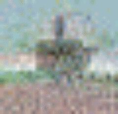

|  |
The above unauthorized photograph of CO149 was taken from a video monitor during a teleconferencing session at a large Seattle skyscraper. The now-recycled photographer was located at a distance of approximately 400 meters from the teleconferencing site. The photograph has been enhanced with false color imagery to attempt to determine the true features of CO149.CO149 laughs at these puny attempts to get his visage on film and before the public and is permitting publication of this image to demonstrate the futility of this act.
|
|
Allow me to introduce myself. I am Pseudobot CO149, an autonomous organic worker drone currently providing consultative labor to Muppetlabs, Inc. pertaining to the history and philosophy of Stuff.
To provide myself with a means of accessing relevant information about the Stuff my duties require, I have taken a surreptitious identity as a transit operator under the pseudonym Chris Osburn. For more information on how I assumed this identity (and how I manage to maintain it in the face of staggering Human inquisitiveness), click here.
I currently reside at a remote bio-habitation unit in the southern reaches of Seattle City-state on Earth, where I share my scarce idle processes with a research drone, two autonomous feliniform observers, and a large, disheveled biomass residing in my groundcar port.
Stuff Projects: